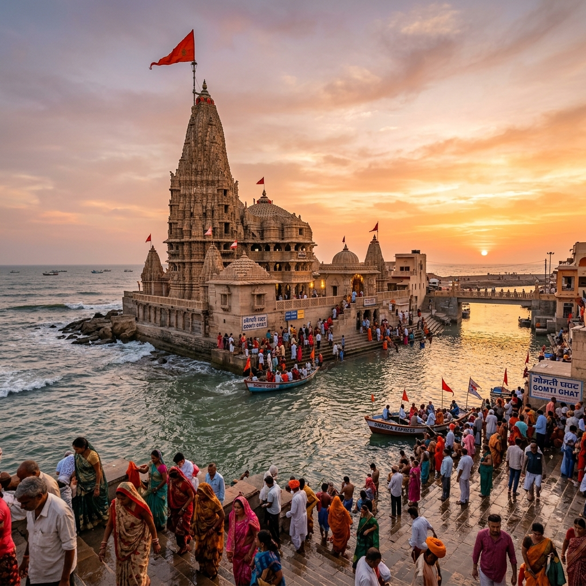
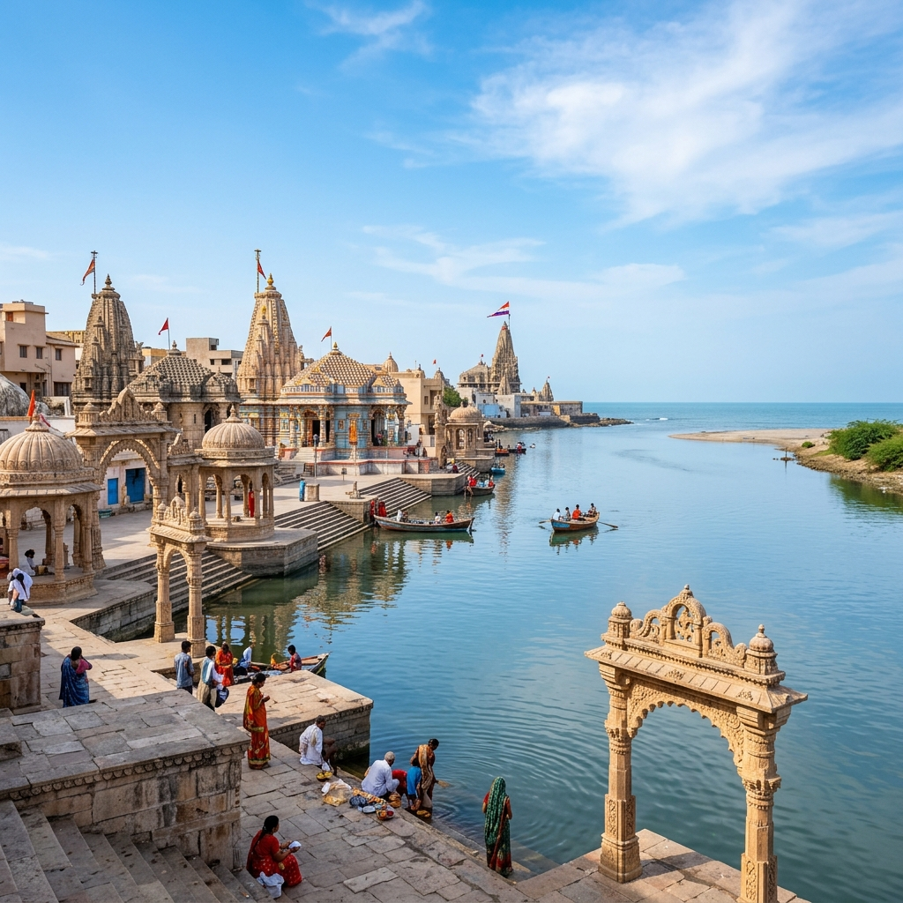

Dwarka Ancient Port Explorer
Step onto the sacred shores of Gujarat. Discover the legendary capital of Lord Krishna, its role as a Bronze Age maritime emporium, and the underwater archaeological ruins of Dvaravati.
The Golden City Reclaimed by the Sea
Dwarka (historically Dvaravati or Dwaravati) stands as one of India's most ancient and sacred coastal cities. According to the Puranas and Mahabharata, it was established by Lord Krishna on land reclaimed from the Arabian Sea, serving as the commercial capital of the Yadava clan.
Designed with golden palaces, extensive storage granaries, and active docks, it was known as *Dvaravati* (meaning "the gateway"), indicating its position as a primary trade terminal. Ancient chronicles record that following Lord Krishna's departure, the great city was submerged beneath the ocean waves, passing into sacred legend.
📜 Sacred Chronicles
- Estuary Harbor: Positioned next to the Gomti River estuary.
- Krishna's Seat: Documented as a golden fortified capital reclaimed from the sea.
- The Submergence: Legend recorded in the Mahabharata, confirmed by marine archaeology.
Maritime Significance of the Kathiawar Peninsula
Dwarka acted as a major international trading outpost connecting the Indian hinterlands with distant lands.
Gulf Navigation
Positioned at the tip of Gujarat, Dwarka guided shipping vessels entering the Gulf of Kutch, shielding ships from rough open-sea currents.
Arabian & Roman Routes
Merchant fleets loaded spices, cotton, and ivory for transport to Red Sea and Persian Gulf ports, trading with Rome and Egypt.
Conch Shell Crafts
Excavations reveal local workshops creating shell bangles and tools, distributed across Bronze Age trading sites.
🌊 Submerged Stone Anchors & Forts
- Dr. S. R. Rao (NIO): Guided initial diving explorations in 1983, locating submerged structures.
- Triangular Anchors: Three-holed granite stones matching Late Bronze Age anchors of Cyprus and Syria.
- Stone Bastions: Underwater walls and pillars located 3 to 10 meters deep.
The Submerged Ruins of Dvaravati
In the 1980s and 1990s, the National Institute of Oceanography (NIO), led by Dr. S. R. Rao, conducted pioneering underwater excavations off the Dwarka coast. Divers uncovered structural remains of a submerged stone city, including fort walls, bastions, and stone pillars.
A key find was the discovery of triangular three-holed stone anchors. These anchors correspond to anchors used in the eastern Mediterranean during the Late Bronze Age (c. 1500–1200 BCE). This confirms Dwarka's integration in ancient long-distance maritime networks and supports the historical roots of the Mahabharata description.
Chronology of Dwarka Port
Tracking Dwarka's journey from legendary golden capital to underwater archaeological landmark.
Mahabharata Era
Dwarka is founded by Lord Krishna, developing into a maritime gateway before sinking beneath the waves.
Roman Logs
Ptolemy records the gulf harbor of Baraca, historically associated with the Dwarka shoreline.
NIO Discoveries
Dr. S. R. Rao guides marine archaeologists to uncover submerged bastions and ancient Mediterranean stone anchors.
Spiritual & Scientific Center
Retains a key place in Hindu heritage, while marine sonar scans continue mapping the submerged ocean floors.
The Estuary and Submerged Ruins of Dwarka
Explore the spiritual structures and marine relics of the ancient harbor.



📚 References & Further Reading
- Rao, Dr. S. R. (1999). The Lost City of Dvaraka. Aditya Prakashan.
- National Institute of Oceanography (2002). Marine Archaeological Explorations off Dwarka: Summary of Structural Finds. NIO Council of Scientific & Industrial Research.
- Tripathi, Alok (2005). Underwater Archaeology in India. Heritage Publishers.
- Mahabharata (Mausala Parva). Sinking of Dwaraka. Sanskrit Text and Translations.